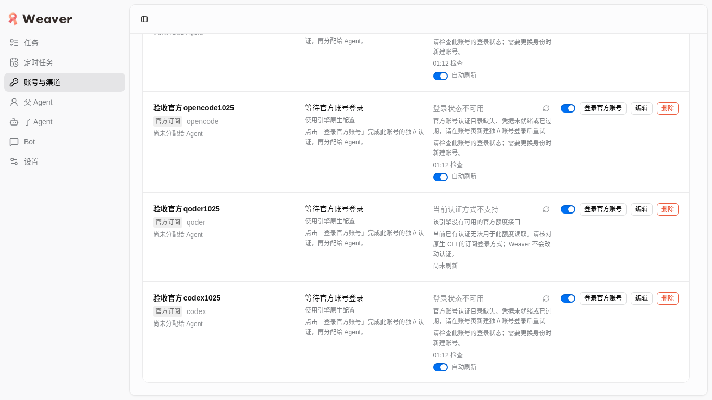
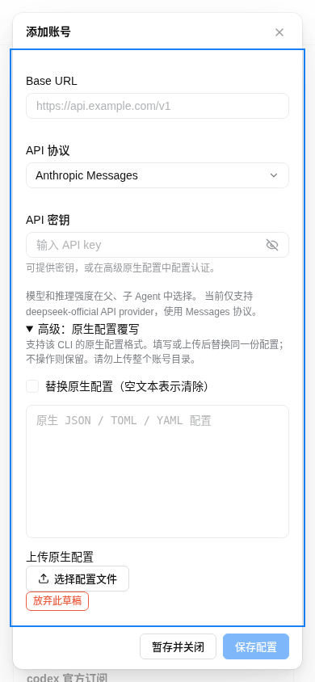
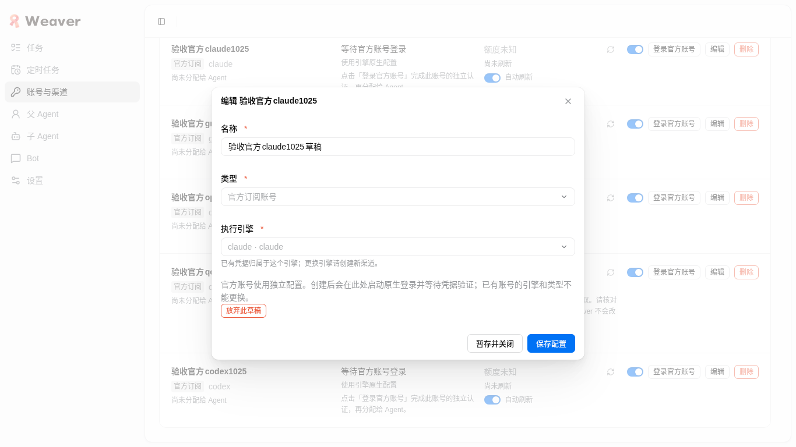
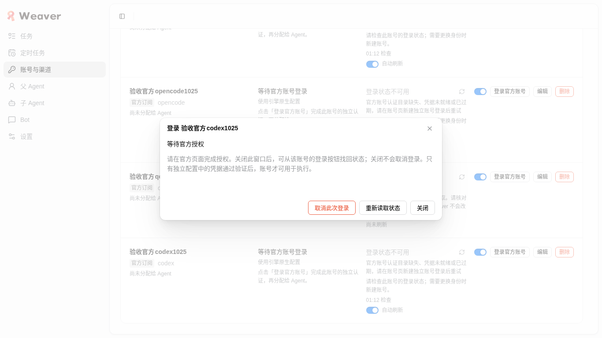

存在真实产品阻断，且五个新官方账号均未完成本人授权与原生凭据落盘验证。启动/取消登录不等于完整OAuth成功。
滚动、真实幂等导入、真实API新建后的hi回复等部分路径通过；以下失败与missing仍需处理。
时间：2026-10-25T05:18:17.234591+00:00（UTC）。URL：127.0.0.1:4738/#/channels
源码基线：294b7f91e974e0a4dc134fbe398810207198ebdc
冻结application digest：befa8adfb3603b89e5cc285298d29644a6eb4b918e324ac1f841f7ade5ae5c1f；逐文件复核不匹配：0。源码复核 · 机器结果
范围只覆盖本包账号/渠道真实UI；借用持久test服务与真实本机引擎/账号，不是单测或mock。首次6条导入及其他engine Hello属于其他工作包，本报告不替代其证据，也不宣称完整Weaver引擎正式任务或IM矩阵验收。
missing：本人OAuth及严格落盘验证；真实混合partial failure、managed更新与旧source分歧、API运行瞬间env、pending账号执行拒绝、真实server重启恢复与新建快速双击压力验证。未执行项没有填为通过。
| 状态与项目 | 实际步骤 | 结果、限制与证据 |
|---|---|---|
| pass 账号长列表真实滚动 | 1366×768 wheel；1440×900 PageDown；390×844 两种输入。均从顶部开始，坐标落内容区或显式聚焦 MAIN。 | 到达最终账号与按钮；scrollTop 达 total−height，末行 rect 位于可见区。未用 JS 强设滚动。 list-desktop-wheel.json list-desktop-page.json list-narrow-wheel.json list-narrow-page.json |
| pass 高级 API 长表单可达 | 先用真实 wheel 回顶部，再分别 wheel / 明确 DIV 焦点 PageDown；实际点击 summary 展开。 | 两桌面尺寸与390×844下末内容、保存按钮均可见；PageDown 从0到238/331，wheel 从0到370/331。 form-desktop-wheel.json form-desktop-page.json form-narrow-wheel.json form-narrow-page.json |
| pass 页头、筛选、窄屏导航与旧引擎入口 | 390×844打开导航抽屉；直接打开 #/engines。 | 未见横向溢出；导航无旧引擎项；旧路由正常回退 #/tasks。所有7引擎 enabled=true。 narrow-header.png narrow-nav.png narrow-nav.json legacy-route.json engines-and-pending.json |
| pass 类型/引擎筛选与重新读取 | 选择 API+dsh，再官方订阅+dsh，实际点击重新读取。 | API+dsh返回正确两条；订阅+dsh明确无匹配，重新读取保留两个筛选。 filter-api-dsh.json filter-empty-reload.json |
| fail 跨记录编辑草稿归属 | 编辑新建Claude账号名为草稿→暂存并关闭→点击Grok编辑。 | 实际打开Claude旧草稿，无提示说明正在恢复另一个账号。未保存以免误改；放弃草稿后Grok编辑恢复正确。 edit-switch-draft.json edit-switch-draft.png edit-after-discard.json |
| pass 真实 API 新建/编辑/密钥保留 | UI创建明确一次性dsh账号；从test ChannelStore内存取真实key，用本任务CDP Input.insertText填写；编辑留空key。 | 首次真实CAS冲突保留输入，重新读取状态再保存成功；编辑密钥空白不回显，keyRetained=true。已有kind/engine禁用。 api-cas-preserved.png api-upload-state.json api-clear-state.json |
| pass 配置上传大小与合法配置保存 | 上传>128KiB被拒；上传{}保存后清配置；另一次性账号上传有效dsh YAML []。 | 超过128KiB明确错误且可继续上传；[]保存hasConfig=true；清配置后hasConfig=false且key保留。补充账号已删除。 api-upload-state.json api-clear-state.json api-valid-config-state.json |
| fail 无效引擎配置保存未即时拒绝 | 上传语法有效但不符合dsh补丁列表形状的{}并保存，再打开角色模型读取/连通流程。 | 账号保存成功；角色页出现 INVALID_REQUEST: dsh 原生配置必须是 patch 列表。清配置恢复。失败形状未在账号保存阶段阻止。 api-upload-state.json api-connectivity-requests.json |
| pass UI新建 API 实际轻量 Hello | UI新建临时角色 acceptance_dsh_1025，绑定新API/deepseek-flash/off，保存后点击连通测试。 | 实际显示可用、2.6秒、hi；对应渠道channel_0803af5d91db4df38611d340，父Agent白名单引用0。API在已有Claude额度block仍存在时可用。 api-hello-result.json api-role-binding.json api-connectivity-requests.json |
| pass 账号启停与引用删除保护 | 角色引用时点删除→删除禁用；停用账号，角色显示渠道未启用，再点击测试；恢复此账号；UI删除临时角色保存，再删除账号。 | 停用后sayHi HTTP400；此前成功结果短暂仍留在角色页直到重测。精确清理两条一次性API及临时角色、secret；原账号/角色保留。 delete-protection.json api-disabled-role.json api-connectivity-requests.json data-retention.json |
| pass 真实本机默认导入幂等 | 默认全引擎、默认来源、不勾更新，UI实际提交（两轮）；指定/home/mocha/.codex再导入。 | 默认added0/existing6/updated0/notFound[pi]/failures[]；首次已有13账号，默认幂等不增。最终18含本包5官方metadata。指定Codex existing1。首次6条真实导入属于environment包，不由本包证明。 import-before.json import-after.json import-structured.json import-explicit-codex.json |
| pass 导入错误目录与Pi未发现 | 指定本包不存在目录提交，读取输入；改真实Codex目录重试。Pi清空目录（原生键盘清除）走默认路径提交。 | 错误明确未完成并保留目录；合法目录恢复已有1。无配置Pi明确未发现，无假成功。工具空fill未触发受控值变化，已用Control+A/Backspace复验。 import-invalid-directory.json import-explicit-codex.json import-pi.json |
| pass 五官方账号独立私有根与原生命令 | 逐个UI创建claude/grok/opencode/qoder/codex账号并启动原生登录。 | 5个不同0700私有root；hasCredentials=false。实际/proc cwd与CLAUDE_CONFIG_DIR/GROK_HOME/XDG*/QODER_CONFIG_DIR/CODEX_HOME归属各自root，无复制旧auth。Pi/dsh官方选项不存在；Qoder通用API选项不存在。 data-retention.json claude-native-process.json grok-native-process.json opencode-native-process.json qoder-native-process.json codex-native-process.json |
| fail 官方授权入口完整性 | 各CLI启动后等待、关闭/重开、取消和重试。 | Grok有accounts.x.ai/oauth2/device；OpenCode有opencode.ai/console/device及设备码；Codex有auth.openai.com/codex/device但无设备码。Claude首次约1分钟、重试约3分钟仍starting无URL；Qoder首轮约1分钟仍starting无URL。原生stderr未通过产品API暴露，未猜测原因。 official-timeline.json codex-final-ui.json codex-pending-masked.png |
| pass 官方关闭找回/取消/重试与陈旧job恢复 | 每个账号实际关闭重开、取消并重试；Grok reload后找回同job；自有Claude sessionStorage注入合法格式不存在jobRef后打开真实backend错误并重试。 | cancel/retry有新job；无全局logout/杀全局进程。陈旧引用明确NOT_FOUND并可恢复。未重启server；不能据此宣称真实server重启已验。 official-timeline.json official-stale-ref.json official-all-cancelled-processes.json official-final-jobs.json |
| missing 本人授权完成及原生落盘严格验证 | 未替本人操作任何第三方授权。 | 五条新官方账号均未完成OAuth。只留最终Codex活job给owner接管，且缺设备码仍需先解决。不能算官方登录完成。 official-final-jobs.json engines-and-pending.json final-native-process.json |
| pass 原有账号额度真实刷新与自动开关 | UI刷新原有Codex账号；仅在新Codex验收账号关/开自动刷新并回读。 | 原有Codex7天已用60%（当次观察），归属该账号；新鲜未知/unsupported未伪0，API界面不展示官方订阅额度。未解除Claude真实额度block；未改原账号自动刷新偏好。 quota-refresh.json quota-auto-off.json quota-auto-on.json engines-and-pending.json data-retention.json |
| missing 尚未覆盖的严格分支 | 无安全真实条件触发混合partial failure；未替换原订阅或人为改旧source。 | managed较新认证与旧source分歧替换场景未构造；API Hello子进程env未及时采到；pending官方实际角色执行拒绝未另行调用；真实server重启恢复未测；未对新建保存进行快速双击压力测试（导入加载时控件禁用已观察）。不把这些写成pass。 |
| pass console/network与证据卫生 | 记录实际console、page errors、HTTP状态；只导出最小安全字段。 | 选定证据artifact_errors=[]；业务负向路径400与工具失效ref/遮挡等采证错误分开。无HAR、request body、key、cookie、device code或OAuth query归档。 runtime-health.json source-verification.json |




产品意图 pass：账号、导入与配置入口明确；业务可信 fail：官方入口与配置形状阻断；信息架构 pass：筛选、列表及窄屏主操作可达；交互就绪 fail：跨记录草稿和登录启动状态断裂；系统工艺仅本轮真实浅色视口检查，未据此宣称所有主题通过；视觉品牌沿既有应用。关键主路径阻断与missing不以平均分放行。
借用4738 / dev-weaver-real-accounts.scope和持久test data-dir保留；生产4737 / weaver.service保留，未读取或修改其业务数据、未停服务。两条本包一次性API、secret及临时角色已精确删除；5条“验收官方…1025”metadata与各自私有root保留。原账号、原角色与父Agent配置对初始revision7比较相同。未全局logout、未复制原auth、未清DB、未提交或推送。
仅保留最终Codex待接管job；缺码阻断需owner先处理，授权必须本人完成。原生登录超时10分钟，2026-10-25T05:25:26+00:00；放弃时在此账号点“取消此次登录”，核对其scope释放。当前job/unit详见 原生进程、最终状态。最终浏览器/服务清理状态。
所有引用文件为本交付目录相对附件。没有HAR/request body/密钥/cookie/设备码/完整OAuth query。工具失效ref、遮挡与旧response不可读没有作为业务失败或通过证据；选定归档的artifact_errors为空。最终HTML已实际file打开、390px无横向溢出，附件已加载；实际生成8页打印稿并查看首屏、核对核心结论与资源段。该检查只证明报告可读性。 本任务Chrome已关闭、profile已删除，外部精确profile进程核对无残留。